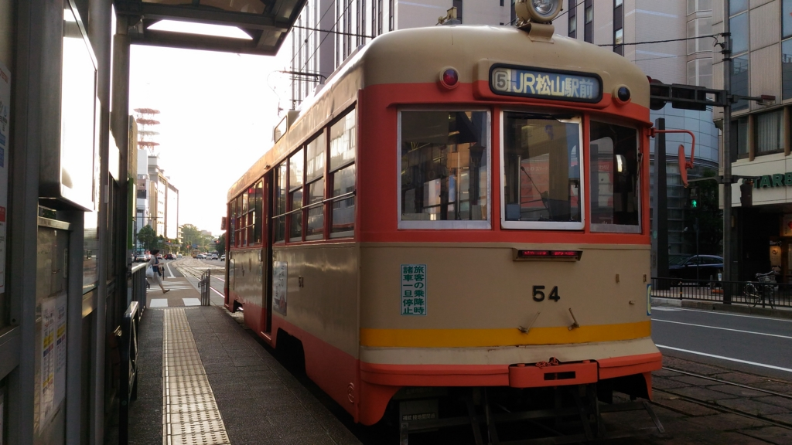

期日前投票をしてきた
公開日：

生まれて初めて国政選挙の投票をブッチしてやろうかと思うぐらい、今回の選挙には選択肢がないが、ちんちん電車に乗って街へ出て、国民の義務を果たしてきた。
ちんちん電車の 2/3 はちんちんでできている
— だるやなぎ に天使が舞い降りた！ (@daruyanagi) 2016年7月5日
投票先は、自民党。正直なところ、アベノミクスなんて小賢しい政策は絶対に失敗すると思っているし、消費税増税の約束を守らないし（その分、課題を次の世代に先送りしたわけだ！）、評価できるのはオバマさんの広島訪問を実現した外交政策ぐらいなものかと思うが、無責任なヒトに任せるよりはよっぽどマシかと思い直した。野党はあの手この手で「自民党でいいんですか？」と問うが、「お前らよりはマシだろうよ」という感想しかない。
個人的には、シンプルで手広い社会保障があればそれで充分だ。いかにご立派な理想を掲げていても、複雑で全体像がとらえがたいアドホックな補助は、かならずズル賢い人間に悪用されて終わる。世界は放っておけば複雑になるのだから、常にシンプルにする努力が必要だろう。
かつてはそういうことをみんなの党あたりに期待をしてみたが*1、残念ながら応えてはくれなかった。そして「あっちにこんな補助をします！」「こっちの予算を増やします！」という輩だけが残り、今日も互いに相手を引きずり下ろすためだけに選挙運動をやっている。バカらしく、そして悲しいことだ。
でも、かつて書いた記事（今読むと赤面ものだなぁ）を読み返してみると、ちょっとだけ前進していることもある。
5年前の自分が望む政策は以下の3つだったらしい。
- （マイナンバーの導入と）国家主導による電子マネーとマイクロペイメントの整備
- 消費税への一元化
- ベーシックインカムの導入
簡単に言えば、課税捕捉率の向上＋ロングテール課税で財源を作って、それを広く平等かつ機械的に配ろうっていう話やな。
まず、マイナンバーができた。いろいろトラブっているけれど、より公平で効率的な徴税を期待したい。“国家主導による電子マネーとマイクロペイメントの整備”というのは個人的にもラディカルな考えだなぁと飽きれるけれど（プライバシーマンが聞いたら発狂しそうだ）、まぁ、機が熟せば自然とそうなるんじゃないかなと思っている。
消費税への移行はまだ進まない。今さら消費税増税で財政がどうにかなるものか、という意見はわからんでもないのだけど（アベノミクスとやらで解決できたらラクなのになぁ）、これは次世代への責任の問題だと思っている。景気への影響を懸念するのはわかるが、8％を10％にしただけで破たんするような経済なら、さっさとパンクさせて再構築したほうが、次世代（の次世代ぐらい）にとっては好ましいのではないだろうか。近年、老人が尊敬されていないのは、彼らが自分たちの責任において課題を解決しようとせず、先送りしてきたからだ。その轍だけは踏みたくない。多少苦しくても、一つずつ課題をクリアしていきたいものだと思う。
まぁ、でも、ミンシュシュギで現状維持と問題の先送りが決まってしまえば、ボクが抵抗しようがどうにもならないけどね。それはそれ、また別の話。
ちなみに自分は「老人の参政権を制限しよう」だとか「納税者だけに投票権を与えよう」などという意見には大反対だ。そんなことを言っているマンは、ペプシコーラでもかぶって頭を冷やした方がいいと思う。
ベーシックインカムについては、最近ようやく話題に上がるようになった。ベーシックインカムはけっして銀の弾丸ではないが（たぶん、ある意味今よりもエグい世の中を招来すると思っている）、雇用が細分化・流動化していくのが避けられない以上（別に小泉・竹中がいなくてもそうなるんだよ）、無条件で機械的に支給される社会保障は必須になるはず。消費税増税で基礎給付になればロードマップとしてはよかったのだけど、公○党が要らんことをしくさって軽減税率になりそうなのは困る。
――けれど、世の中の歩みってこれぐらいのスピードだよな。変わるときはいっぺんに変わるけれど。ちょっとはマシになってるのならば、これを維持したいと思う。なので、自民党に票を入れておいた。
むすびに
さて、いろいろ変なことを言ってきたけれど、本当に先ほどの3つの政策を実現してほしいかというと、それはそうでもないんだよね。ここら辺はちょっと他人には理解してもらえないかもしれないのだけど、なんというか、自分が正しいとは思えない。方向性としてはそっちが望ましいという確信はあるんだが、たぶん、実務的にはもっといい方法があるんじゃないだろうか。そこは三人寄れば文殊の知恵だからね、そういう方向性に沿って前向きな議論がしたいんだよ、結局のところ。
なので、別に先ほどの政策を掲げなくても、穏健で、シンプルさと共和主義的討議を尊び、実務的な調整力を重んずる政党があれば喜んで投票すると思う。別に政権をとらなくても、与党の賛同すべきは賛同し、反対すべきは反対する。その判断基準として、討議により研ぎ澄まされた合理性と現実性、これから参加するメンバーにも支持されうる持続性、そしてシンプルさと公平さの尊重があればうれしい。自分はそういうのをフワッと“共和主義”と呼んでいるが、この国では民主主義ほど大事にされていなくて残念に思っている。
*1:誤解されたくないので言っておくが、僕は渡辺喜美という人物個人を信任したことは一度もない。政党という枠組みで討議と合意、矯正がなされることを期待していたのだが、組織としてあまりにも未熟だった